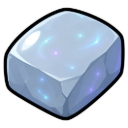

Death Rune
Rune
| Property | Value |
|---|---|
| Value | 110 coins |
| Stacks | Yes |
Dropped by
| Monster | Level | Amount | Chance |
|---|---|---|---|
| 78 | 2–5 | 30% |
Made by
| Recipe | Level | Needs |
|---|---|---|
| 💫 Bind Death Runes | 💫 Runecrafting 65 |  Rune Essence |
Sold at
| Shop | Zone | Price |
|---|---|---|
| 🕯️ The Bone Market | 🏚️ Bleakhaven Ruins | 180 coins |
Used to make
| Recipe | Level | Amount |
|---|---|---|
| 🧵 Weave Arcanist Gloves | 💎 Artifice 60 | 3 |
| 🧵 Weave Arcanist Boots | 💎 Artifice 62 | 3 |
| 🧵 Weave Arcanist Hat | 💎 Artifice 64 | 6 |
| 🧵 Weave Arcanist Robe Bottom | 💎 Artifice 67 | 9 |
| 🧵 Weave Arcanist Robe Top | 💎 Artifice 70 | 12 |
Spells
- Death Wave: Sorcery 62, uses 1
- Void Lance: Sorcery 82, uses 1